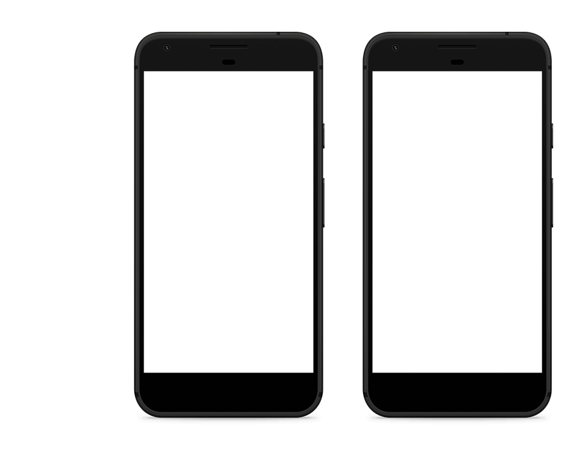

ani-nanny
No worries ani-more
Download
Download or app here or some shit

About
Our app allows owners and pet-nannies to connect. You can create an account in minutes and chat with other users to set an appointment with our registered pet-nannies to have your furball taken care of as you would have. Plus we made it cheap!
There is no more need to close your beloved ones in cages for days while you are away. It’s safe, reliable and life-changing. On the other hand, if you love animals, you’re more than welcome to become a ‘pet nanny’ and give a temporary home to a furry friend.
Ani-Nanny gives a great opportunity to both parties, who don’t need to worry ani-more.